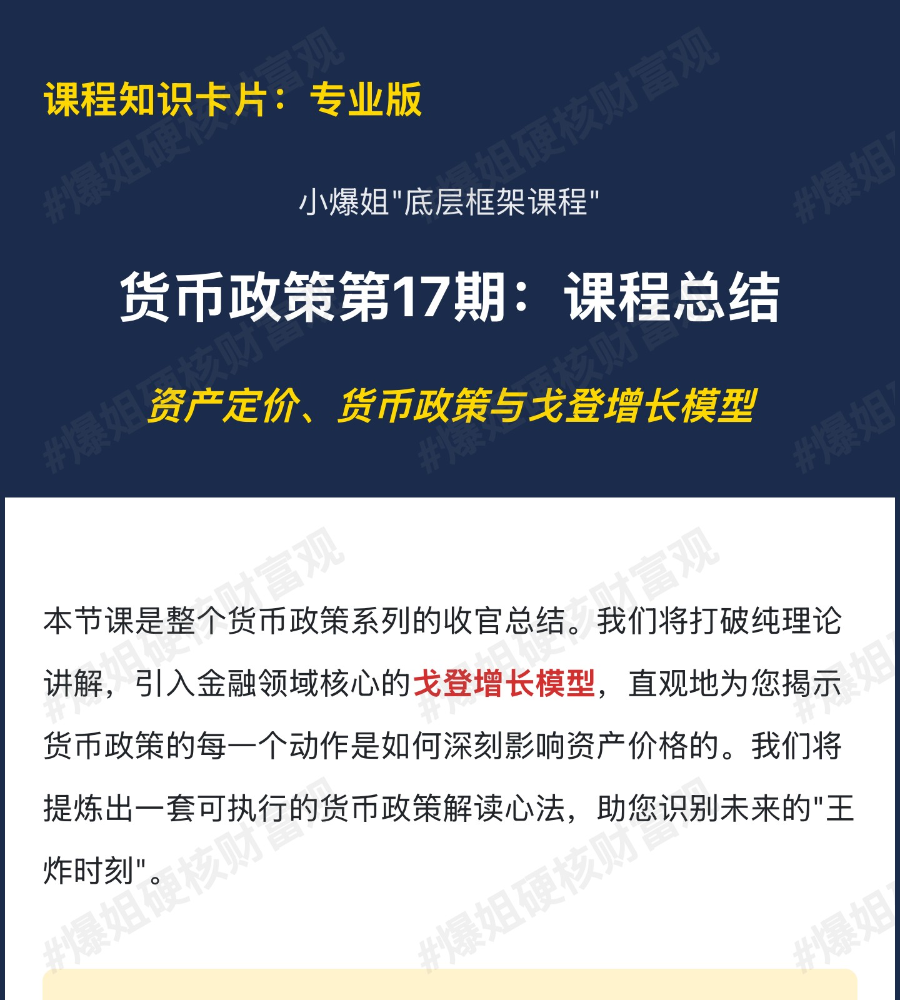
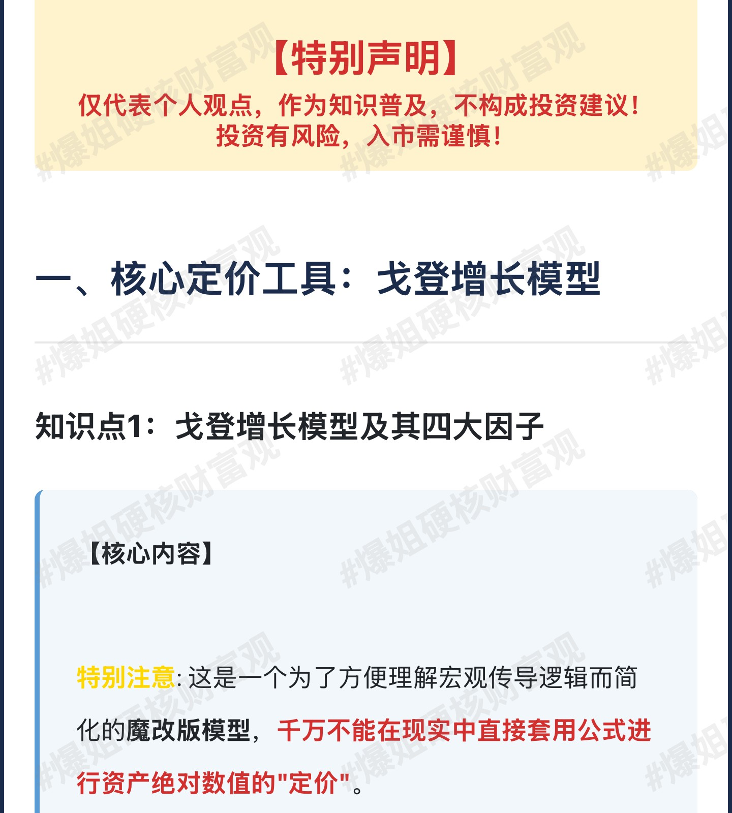
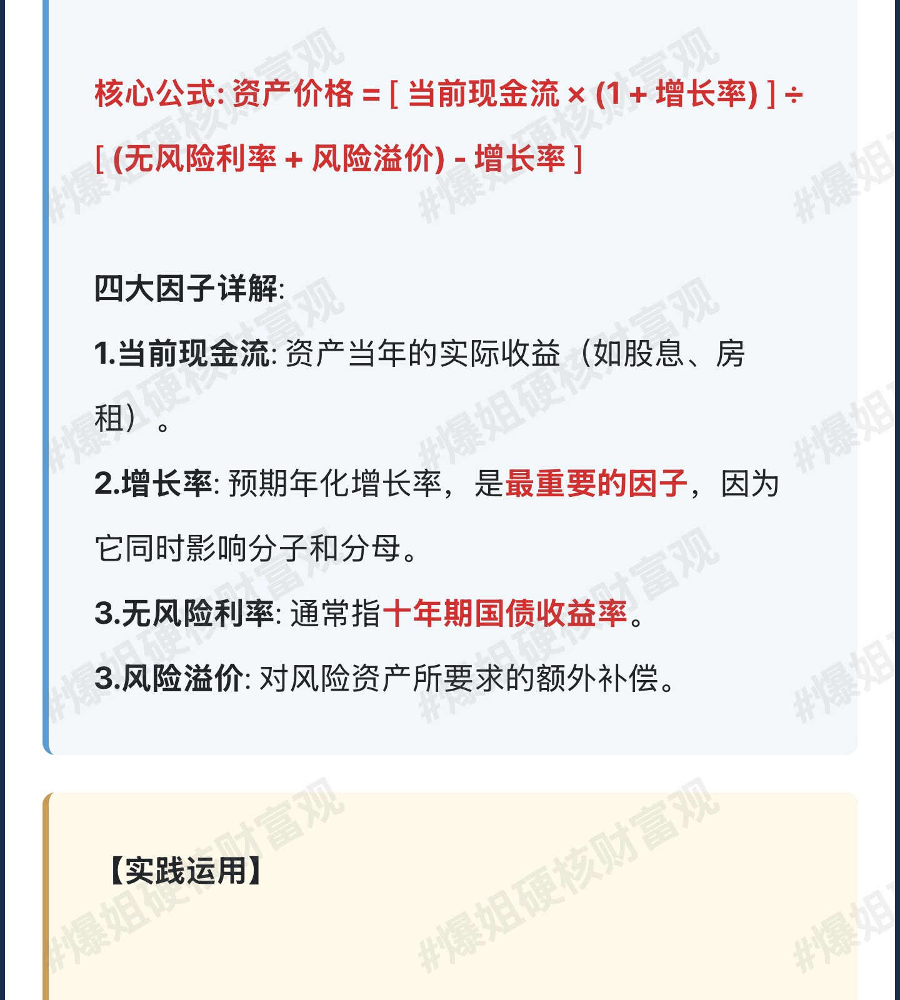
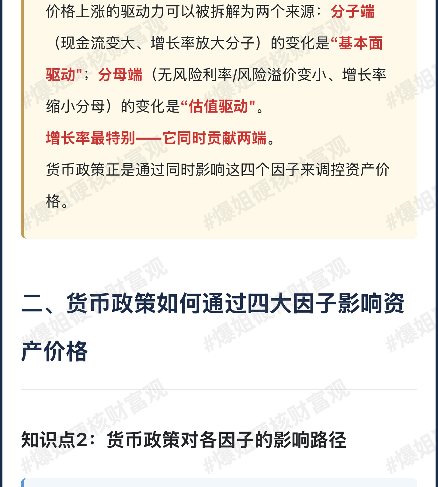
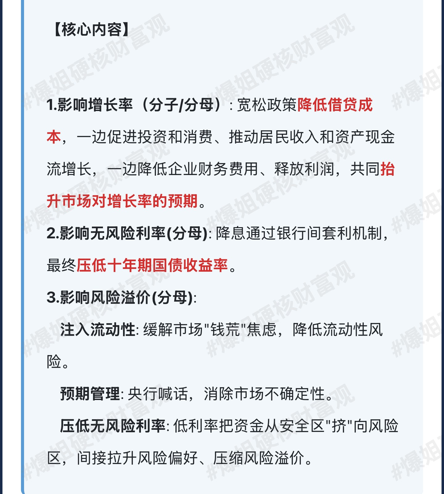
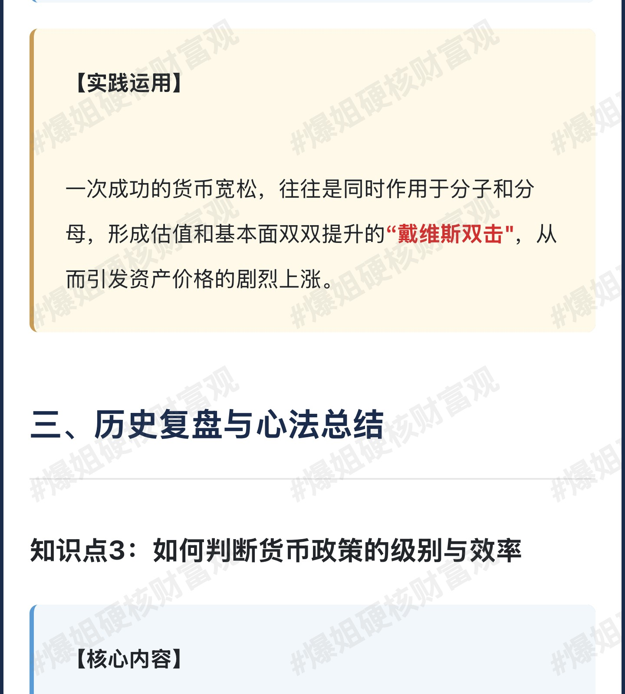
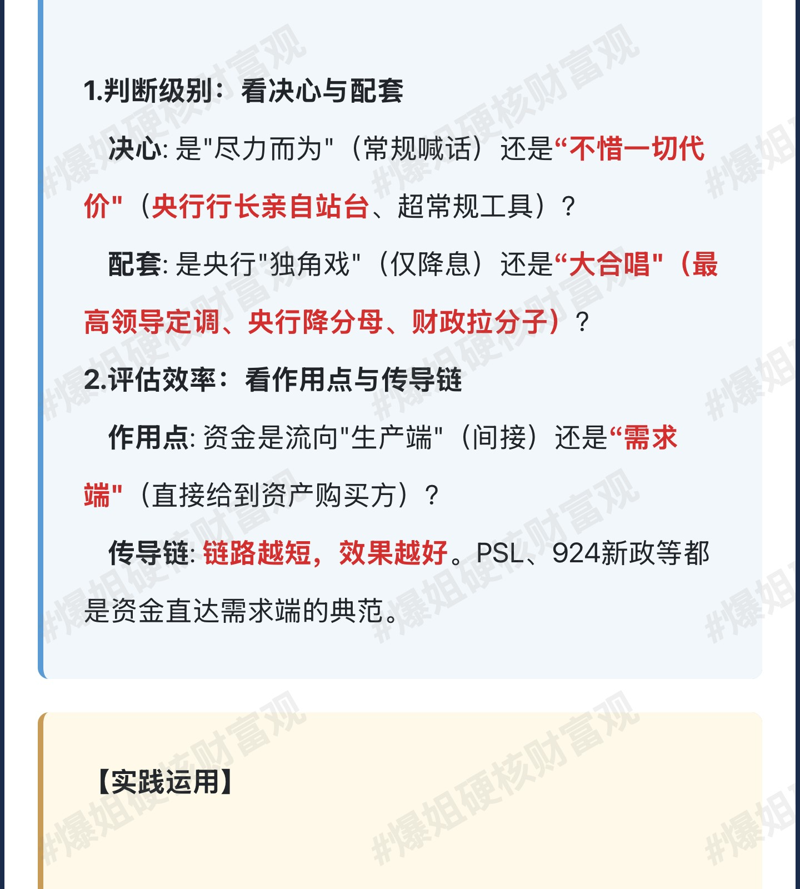
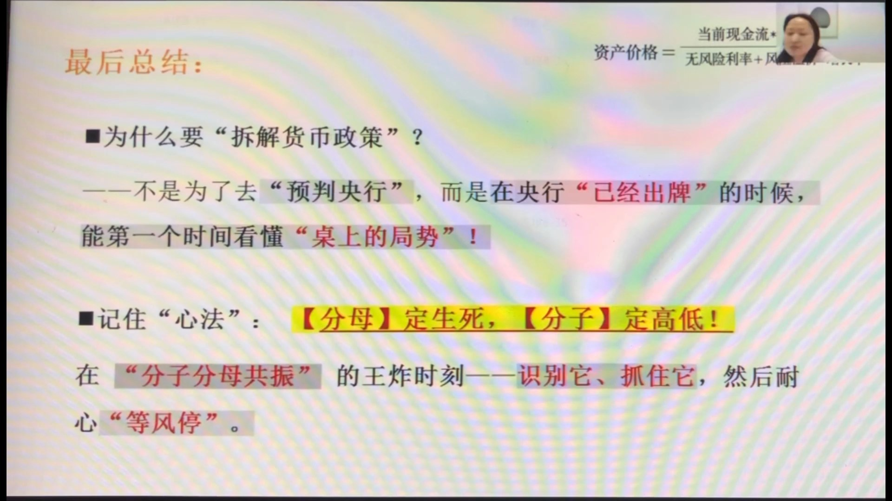


本期是货币政策系列的收官总结课。不讲复习，而是用一把"万能钥匙"——戈登增长模型（资产定价公式）， 把前16节课讲的货币政策全部串起来：资产价格由四大因子（当前现金流、增长率、无风险利率、风险溢价）共同决定， 货币政策正是通过同时影响这四个因子来调控资产价格。课程先用数字代入让你直观感受每个因子变化对资产价格的剧烈影响， 再复盘PSL（2015-2018）与924新政（2024）两个经典案例如何引发"分子分母共振"， 最后给出读货币政策的方法论：先判级别（决心+配套），再评效率（作用点+传导链）。 终极心法：分母定生死，分子定高低——识别并抓住分子分母共振的"王炸时刻"。
飞书妙记逐字稿
小爆姐开场说明：今天是宏观框架课货币政策的最后一节总结课，前边已讲了16节、300多页PPT。总结课不讲复习，而是要用一个最简单、最直观的方法帮大家捅破窗户纸——回答"为什么要学货币政策、学货币政策到底有什么用"。
本节定位：货币政策总结课 = 用"戈登增长模型"把前16节串成一个可执行的框架，掌握"货币政策 → 资产价格"的完整传导链路。

今天用的公式是戈登增长模型——专业说法是"恒定增长的股利贴现模型"，主要给"能稳定分红且分红增速稳定"的权益类资产做估值。
特别提醒：这是一个为理解宏观传导逻辑而简化的"魔改版"模型，只能用来理解逻辑，千万不能在现实中直接套用公式给资产做绝对数值定价。
资产价格 = [ 当前现金流 × (1 + 增长率) ] ÷ [ (无风险利率 + 风险溢价) − 增长率 ]
| 因子 | 位置 | 含义 |
|---|---|---|
| 当前现金流 | 分子 | 资产当年的实际收益：股息、债券利息、房租租金。股价价差、房价涨幅等价差不属于现金流。 |
| 增长率 | 分子+分母 | 现金流的预期年化增长率。最重要：同时影响分子和分母（分子乘它变大，分母减它变小）。 |
| 无风险利率 | 分母 | 通常指十年期国债收益率。 |
| 风险溢价 | 分母 | 对风险资产所要求的额外补偿（如股票、房产、信用债存在本金亏损风险，需给补偿）。 |
通俗理解：资产价格由这四个因子"共振"产生。记两个口诀——分子变大（现金流↑、增长率↑）= 涨基本面；分母变小（无风险利率↓、风险溢价↓）= 涨估值。

用"房子"举例，把数字带进公式感受每个因子的作用。基准情景：
| 参数 | 数值 | 代入公式位置 |
|---|---|---|
| 房租（当前现金流） | 12 万/年 | 分子 → 当前现金流 |
| 增长率 | 3% | 分子+分母 → 增长率 |
| 无风险利率 | 2% | 分母 → 无风险利率 |
| 风险溢价 | 4% | 分母 → 风险溢价 |
| 房价（结果） | 412 万 | —— |
由此可得：一个资产的价格，是四大因子共同共振的结果。接下来逐个因子讲：每个因子怎么影响价格，货币政策又怎么影响这个因子——完整传导链路就此打通。
价格驱动拆解：分子端（现金流变大、增长率放大分子）= 基本面驱动；分母端（无风险利率/风险溢价变小、增长率缩小分母）= 估值驱动。增长率最特别——它同时贡献两端。

其他条件不变，只改增长率，看房价变化：
| 情景 | 增长率 | 房价 | 对比 412 万 |
|---|---|---|---|
| 经济走强 | 3% → 5% | 1260 万 | 约 +200%（翻近3倍） |
| 经济衰退 | 3% → -1% | 170 万 | 约 -60% |
想提升增长率，必须改变经济本身——而降息等货币政策对经济只是间接推动。所以：基本面起来很难，但一旦起来，对整个资产价格的影响剧烈而长远。
一句话：增长率=分子分母双引擎，撬动价格最猛；但它是"慢变量"，要靠经济基本面的真实回升。

货币政策能否影响增长率？能，但走的是间接传导链。以房子为例：
核心：宽松的货币政策容易导致资产上涨、紧缩导致资产下跌——背后是完整的传导链路，不是市场情绪那么简单。货币政策直接影响现金流的增长率，而增长率在分子分母上都有，直接作用到资产价格。
其他条件不变，只改无风险利率（10年期国债收益率）：
| 情景 | 无风险利率 | 房价 | 对比 412 万 |
|---|---|---|---|
| 央行降息 | 2% → 1% | 618 万 | 约 +50% |
| 央行加息 | 2% → 5% | 206 万 | 约 -50%（腰斩） |
结论：无风险利率和资产价格负相关——加息资产跌、降息资产涨。
推论：这就是全球资本市场如此关注央行降息/加息的原因——它直接决定资产价格的方向。但"单边降息"的力量有天花板，真正的行情需要分子（基本面）跟上。
风险溢价是各种风险的集合，是四个因子中最复杂、最难量化的一个（涉及人性和市场情绪）。它不是算出来的——只有资产价格出来之后倒推，才知道里面包含了多少风险溢价，因此它是市场非理性波动的主要来源。
| 类型 | 含义 |
|---|---|
| 不确定性 | 明确知道有风险，但不知道何时何地以何种方式发生（"知道自己不知道"）。 |
| 风险偏好 | 知道风险、知道承受能力，权衡后仍选择承受（"知道自己知道"）。 |
| 认知偏差 | 如"黄金永远涨""房子永远不跌"——不知道自己不知道（缺乏常识）。 |
| 情绪偏差 | 知道有风险仍管不住手、追涨杀跌——非理性行为，被情绪控制。 |
| 类型 | 含义 |
|---|---|
| 流动性 | 变现的难易程度。钱多、好卖 → 流动性好 → 风险溢价低；钱少、卖不掉 → 风险溢价高。 |
| 制度 | 机构考核/机制影响行为：公募年底考核减仓；开放式指数基金完全按申赎驱动买卖。 |
| 算法 | 量化交易（趋势跟随）放大市场波动：涨时追涨、跌时杀跌。 |
| 期限 | 风险的放大器：时间越长、不确定性越高、风险溢价越高。 |
关键：风险溢价=主观×客观多因素共振，无法预先量化 → 市场"没道理的涨跌"多源于此（如美债长期风险溢价上升 → 美债价格下跌、收益率上涨）。
先看数字：其他条件不变，只改风险偏好（风险溢价）。
| 情景 | 风险溢价 | 房价 | 对比 412 万 |
|---|---|---|---|
| 大家更爱冒险 | 4% → 3% | 618 万 | 约 +50% |
| 大家更保守 | 4% → 8% | 177 万 | 约 -57% |
结论：风险溢价和资产价格负相关。风险偏好越高（更爱冒险）→ 需要补偿越小 → 溢价越低 → 资产越贵。
| 方式 | 机制 | 特点 |
|---|---|---|
| ①注入流动性 | QE/降准/逆回购把钱灌进市场 → 接盘的人变多 → 变现难度降低 → 解决"市场缺钱的焦虑" → 风险溢价下降 | 立竿见影：喊大放水，资产立刻爆拉 |
| ②降低不确定性 | 央行喊话/预期管理/前瞻指引 → 把底牌亮出来 → 市场怕的是"不知道明天发生什么" → 信心像"手电筒"：路没变、坑没变，但恐惧减少 → 风险溢价下降 | 给的是预期和信心（信心比金坚） |
| ③压低无风险利率 | 低利率/下场买国债 → 无风险收益太低 → 资金从安全区"挤"向风险区 → 风险资产价格被顶上去 → 风险溢价被动下降 | 慢慢发酵：需逐级传导，动作不快 |
典型案例：沃什上台主张紧缩（QT）→ 资产价格暴跌——理解了定价链路，就能对政策效果提前预判。更关键的一条：经济基本面差（分子差）时，只要央行疯狂放水压低分母，依旧能让资产"由熊转牛"——只是这是"分母端的红利吃掉分子端的利空"驱动的水牛/估值牛。

PSL（抵押补充贷款），江湖外号"棚改核动力"——结构性货币政策工具。2015-2018年，它推动三四线城市房价暴涨。用定价公式复盘：PSL让三个因子共振（只有无风险利率没变——因为它是结构性工具，不是全面降息）。
| 因子 | PSL 的传导 |
|---|---|
| 当前现金流 ↑ | 拆房子（真拆）→ 低价房源减少 → 但租房需求还在 → 净需求上升 → 租金底座上移 → 房租整体上涨 → 现金流变大 |
| 增长率 ↑ | 拆迁户手握几百万 → 抢房大军入市 → 房价房租有了进一步上涨的预期 → 增长率预期抬高 |
| 风险溢价 ↓ | ①不确定性降：国家队（超级买家）下场，大家有了"国家都来买"的底气；②风险偏好升：手里钱多"输得起"，求富心态；③情绪偏差升：踏空焦虑战胜理智，不管给不给补偿都要买 |
结果：分子（现金流、增长率）与分母（风险溢价）全面共振，房价像飞了一样。连一个结构性工具都能对资产产生如此深远的影响——这正是货币政策威力的缩影。
复盘逻辑：PSL=国家给钱 → 拆迁户带钱入市买库存房 → 低端房源减少租金涨 + 上涨预期 + 国家队兜底信心 → 现金流↑、增长率↑、风险溢价↓，三箭齐发。
2024年9月24日，央行推出一揽子货币政策，让股市由熊转牛。它超越传统降息降准——让定价模型中的所有四个因子同步改变并共振。
| 因子 | 924 的传导 |
|---|---|
| 当前现金流 ↑ | 股票回购增持再贷款（央行低息给商行 → 商行借给上市公司/股东 → 回购+注销股票）→ 总股本减少 → 净利润不变但 EPS 被动升高 → 每股现金流上升 |
| 增长率 ↑ | 降准 0.5pct + 政策利率下调 → 引导 LPR/贷款利率下行 → 企业财务费用下降 → 净利润被动上升 → 分红能力变强、可投资资金变多 → 市场对增长率的认知从悲观修正到中性甚至乐观 |
| 无风险利率 ↓ | 7天逆回购降 20BP（1.7%→1.5%）→ 带动10年期国债收益率中枢下移 |
| 风险溢价 ↓ | ①流动性：互换便利——机构用股票/ETF 换央行国债/央票，随时可质押融资 → 不再被迫砸盘卖股票 → 流动性焦虑解除；②不确定性：政治局会议把"稳股市"写入定调文件 + 配套工具 → 尾部风险消失；③风险偏好：明牌（回购增持再贷款 2.25% 成本 < 股息率 → 套利机会，激发贪婪）+ 暗牌（国家队兜底预期，压制恐惧）→ 风险偏好迅速翻转 |
核心认知：股市反转不是"谁喊了个口号"，而是一系列政策推动，根源在上游的货币政策——它是资产涨跌最重要的上游因素。

面对庞杂的货币政策，读法分两步：先判断级别，再评估效力。
| 维度 | 判断要点 |
|---|---|
| 决心 | "尽力而为"（常规喊话，如"保持流动性合理充裕"=正确的废话，市场无反应）vs "不惜一切代价"（央行行长亲自站台、拿出超常规工具、给出具体数字，如潘行长"首期5000亿，不够再5000亿，再不够第三个5000亿"=上不封顶的承诺）→ 超常规操作才能消灭不确定性风险溢价。 |
| 配套 | 央行"独角戏"（仅降息）vs "大合唱"（最高领导定调 + 央行降分母 + 财政拉分子）。央行单打独斗只能降分母（有限），解决不了分子（实体盈利能力）问题；多方协同才能把短暂反弹变成长期反转。 |
现在绝大多数政策几乎都是单边（只降息），分母变小但分子端经济预期差、增长率被往下修——分子的悲观吃掉分母的利好，所以降息效果不大。拉绳子一拉就直，推绳子怎么都推不动。分子（基本面）和分母（流动性）一起向好，才会出现真正的"戴维斯双击"。
未来方向：结构性货币政策成为主流（中央经济工作会议、十五规划后仍是结构性工具）——必须追踪钱的最终流向，流向资产端才有效。

为什么花这么大精力拆解货币政策？不是为了预判央行（那是神仙干的事），而是央行"出牌"时能第一时间看懂桌上的局势。
心法：分母定生死，分子定高低。
定位：这套框架通用、结论不通用——每项政策用了几成效率取决于微观传导路径，需一事一议。但有了框架就不会像无头苍蝇。货币政策系列至此讲完，下次课进入第二趴：宏观经济（会与货币政策勾稽起来讲）。
以下为课程配套的专业版知识卡片，标题为"货币政策第17期：课程总结——资产定价、货币政策与戈登增长模型"，汇总了本期核心知识点的完整框架。

以下为课程配套的极简版知识卡片，标题为"货币政策第17期：课程总结——看懂资产价格的终极密码"。